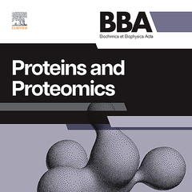

Publications
Peer-reviewed papers indexed in PubMed. Google Scholar has the full list.
2023
-
Integrative mapping of the dog epigenome: reference annotation for comparative intertissue and cross-species studies
Son KH, Aldonza MB, Nam AR, Lee KH, Lee JW, Shin KJ, Kang K, Cho JY
TLDR: We map gene activity, histone marks and DNA methylation across 11 dog tissues to build a reference epigenome for cross-species comparison.
Highlighted inEurekAlertBRIC 한빛사
Author featureTechnology Networks
-
Multi-targeted therapy resistance via drug-induced secretome fucosylation
Aldonza MB, Cha J, Yong I, Ku J, Sinitcyn P, Lee D, Cho RE, Delos Reyes RD, Kim D, Kim S, Kang M, Ku Y, Park G, Sung HJ, Ryu HS, Cho S, Kim TM, Kim P, Cho JY, Kim Y
TLDR: We show that targeted cancer therapies induce core fucosylation of secreted proteins such as PON1, which paradoxically promotes drug resistance.
Registered patentKR102523845B1 · Method for predicting drug resistance of cancer cells based on protein glycosylation
2021
-
Dual targeting of EGFR with PLK1 exerts therapeutic synergism in taxane-resistant lung adenocarcinoma by suppressing ABC transporters
Shin SB, Kim DH, Kim DE, Aldonza MB, Kim Y, Yim H
TLDR: We show that combining gefitinib with PLK1 inhibitors synergistically kills paclitaxel-resistant lung adenocarcinoma cells while lowering drug-efflux transporter expression.
-
Chemotherapy confers a conserved secondary tolerance to EGFR inhibition via AXL-mediated signaling bypass
Aldonza MB, Delos Reyes RD, Kim YS, Ku J, Barsallo AM, Hong JY, Lee SK, Ryu HS, Park Y, Cho JY, Kim Y
TLDR: We show that chemotherapy-resistant cancer cells evade EGFR inhibitors by entering a drug-tolerant persister state that relies on AXL bypass signaling.
2020
-
Prior acquired resistance to paclitaxel relays diverse EGFR-targeted therapy persistence mechanisms
Aldonza MB, Ku J, Hong JY, Kim D, Yu SJ, Lee MS, Prayogo MC, Tan S, Kim D, Han J, Lee SK, Im SG, Ryu HS, Kim Y
TLDR: We show that cancer cells that become resistant to paclitaxel often also tolerate EGFR inhibitors, through several distinct adaptive routes.
Highlighted inEurekAlertMedical XpressBRIC 한빛사
Oncology Times Journal SnapshotResearch to enhance oncology care
2017
-
Paraoxonase-1 (PON1) induces metastatic potential and apoptosis escape via its antioxidative function in lung cancer cells
Aldonza MB, Son YS, Sung HJ, Ahn JM, Choi YJ, Kim YI, Cho S, Cho JY
TLDR: We show that the antioxidant enzyme PON1 helps lung cancer cells resist cell death and gain invasive, tumor-promoting traits.
Related patentKR101334123B1 · Composition and kit for diagnosis of small cell lung cancer
-
Paclitaxel-resistant cancer cell-derived secretomes elicit ABCB1-associated docetaxel cross-resistance and escape from apoptosis through FOXO3a-driven glycolytic regulation
Aldonza MB, Hong JY, Lee SK
TLDR: We show that secretions from paclitaxel-resistant cancer cells help drug-sensitive cells proliferate and evade apoptosis, an effect tied to glycolysis and FOXO3a.
2016
-
Multiplicity of acquired cross-resistance in paclitaxel-resistant cancer cells is associated with feedback control of TUBB3 via FOXO3a-mediated ABCB1 regulation
Aldonza MB, Hong JY, Alinsug MV, Song J, Lee SK
TLDR: We show that paclitaxel-resistant cancer cells resist unrelated drugs through a FOXO3a-driven feedback loop, and that silencing TUBB3 reverses this cross-resistance.
2015
-
Suppression of MAPK signaling and reversal of mTOR-dependent MDR1-associated multidrug resistance by 21α-methylmelianodiol in lung cancer cells
Aldonza MB, Hong JY, Bae SY, Song J, Kim WK, Oh J, Shin Y, Lee SH, Lee SK
TLDR: We show that a natural triterpenoid slows lung cancer cell growth and restores paclitaxel sensitivity in resistant cells by lowering MDR1.
-

Stanniocalcin-2 (STC2): a potential lung cancer biomarker promotes lung cancer metastasis and progressionNa SS, Aldonza MB, Sung HJ, Kim YI, Son YS, Cho S, Cho JY
TLDR: We find STC2 elevated in lung cancer secretomes and tissues, and knocking it down slows tumor cell growth, migration and invasion.
Related patentKR101403019B1 · Biomarker for the diagnosis of lung cancer